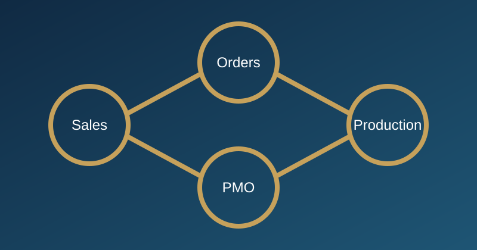

AZORA — Operational Transformation & Governance
AZORA — تحليل الأعمال وحوكمة التحول التشغيلي

القدرة المؤسسية المبنية
إطار تشغيلي محكوم يربط المبيعات بالطلبات والإنتاج مع ملكية واضحة وحدود تكامل قابلة للمراجعة.
السياق
الواقع التشغيلي قبل التدخل
ضعف الربط بين الاستشارة البيعية والطلب وخطة الإنتاج، وتعدد وحدات تشغيل معرضة لتكرار البيانات وتعارض الملكية.
المنهجية
التشخيص ← التصميم ← التثبيت
التشخيص
تحليل رحلة العمل والبيانات ونقاط الملكية، وتحديد فجوات التحويل بين المبيعات والطلبات والإنتاج.
التصميم
إعادة تصميم رحلة البيع لتبدأ بدراسة جدوى، واعتماد المسار الرسمي Sales → Orders → Production، وقواعد الملكية وحدود القراءة فقط وحوكمة التغيير.
التثبيت
إنشاء مستودع PMO مرجعي، واختبارات تشغيل وحالات سلبية، وسجلات تدقيق واختبار، وتسليم تشغيلي، ومراجعات إغلاق رسمية.
الدليل والنتيجة
ما الذي يمكن إثباته؟
الدليل
ملفات Sales وOrders وProduction، وقرارات ADR وCR، ومستودع PMO يغطي 13 سجلًا، ووثائق المراجعة والإغلاق.
الأثر الموثق
تم تنفيذ واختبار المسار التشغيلي الكامل، وإغلاق Release 1 لإدارة الطلبات وRelease 1 للإنتاج رسميًا ضمن حدود تكامل واضحة ودون كتابة عكسية إلى Orders.
حدود الادعاء
لا تتضمن الحزمة الحالية قياسًا ميدانيًا مكتملًا لزيادة الإيراد أو خفض دورة المبيعات أو ربحية المشاتل.
القيمة القابلة للنقل
توضح القدرة على تحويل مشروع متعدد الوحدات إلى منظومة تشغيل محكومة قبل اختيار الأداة أو توسيع نطاق التنفيذ.